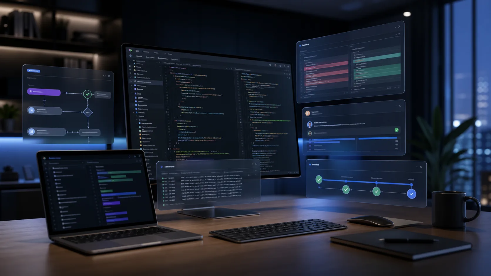
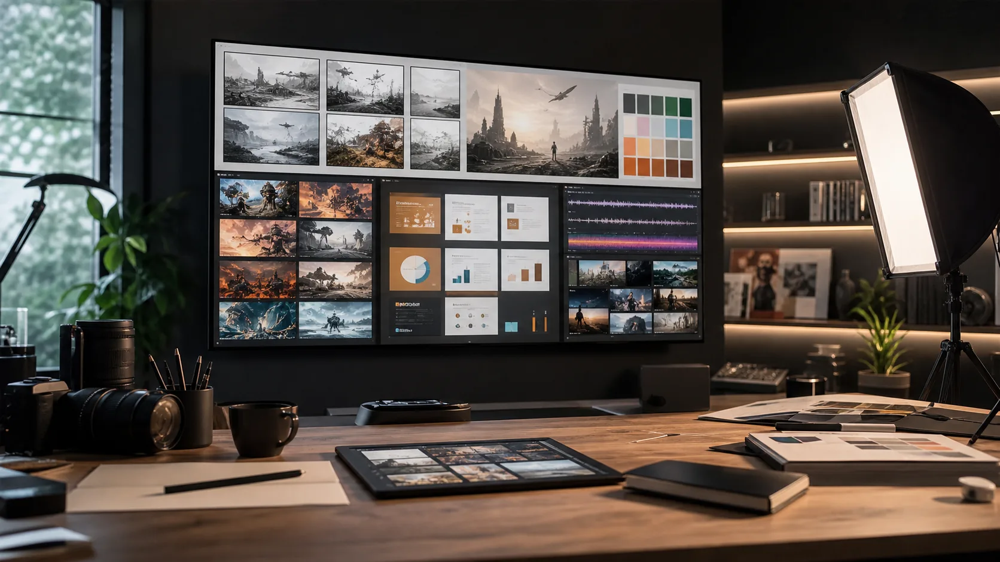
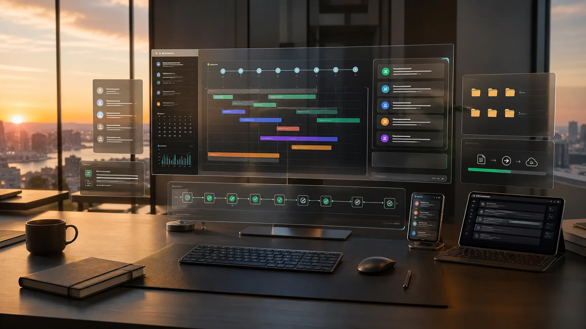

01
理解目標
先判斷你真正想完成什麼，而不是只回覆表面的句子。
Hermes Agent
Hermes 能理解你的目標，拆成可執行步驟，使用瀏覽器、終端機、檔案、GitHub、圖片與文件工具，持續工作到有可交付成果。
Agent Workflow
理解目標、拆解步驟、使用工具，直到交付可驗收成果。
What is an AI Agent
一般聊天機器人主要回答問題；AI 代理人會進一步建立計畫、操作工具、檢查結果，必要時修正做法。你給它方向，它會把方向變成任務，把任務變成檔案、程式、設計稿或報告。
01
先判斷你真正想完成什麼，而不是只回覆表面的句子。
02
搜尋、讀檔、改程式、跑測試、操作瀏覽器或使用外部服務。
03
不是只給建議，而是產出可用的網頁、文件、圖片、摘要或自動化流程。
Capabilities
從研究、設計、程式到內容生產，Hermes 會依任務選工具、補脈絡、驗證輸出。
讀懂專案、改前端、修 bug、跑測試、整理提交紀錄與部署流程。
查找最新資料、交叉比對來源，整理成摘要、表格、報告或決策建議。
製作網頁文案、簡報架構、圖片方向、社群貼文與品牌介紹內容。
把重複流程變成指令、排程或工作管線，降低人工追蹤成本。
Model-powered work
Hermes 會依照任務選擇合適模型與工具：文字模型負責推理與文案，程式模型處理專案與測試，多模態模型協助圖片、簡報與媒體，自動化流程則把成果串成可交付工作。
Research model
把零散網頁、報告、數據與摘要整理成可讀結論，適合市場研究、技術調查與決策前分析。

Coding model
從 repo 結構到前端畫面、測試輸出與部署狀態，Hermes 可以把程式任務推到可驗收。

Multimodal model
把抽象需求轉成視覺方向、頁面文案、簡報草稿與圖片素材，讓內容產出更完整。

Automation model
把長任務拆成階段，持續追蹤進度、整理檔案、回報狀態，直到有明確產出。
Goal Command
當任務不是一次回覆能完成，goal 指令會把它升級成持續追蹤的目標。Hermes 會記住目標、拆出階段、回報進度，直到完成、被你調整方向，或遇到真正需要你決策的阻塞。
持續
跨回合追蹤
拆解
把目標變步驟
驗收
完成才結案
goal: 建立一份產品發布企劃，包含資料蒐集、頁面文案、視覺方向與交付清單。
Hermes 會建立目標，拆分工作階段，查資料、整理內容、產出草稿，並在每個階段回報進度。
輸出
企劃摘要、核心訊息、網站段落、圖片方向、待辦清單與可驗收成果。
Real Case
Hermes 先檢查專案結構、現有文案、設計風格與部署方式，避免一開始就亂改。
把焦點從私人記憶移到「AI 代理人是什麼、Hermes 能做什麼、goal 指令怎麼用」。
建立乾淨、明亮、有層次的介面：清楚標題、細緻留白、半透明導覽、滾動進場與產品視覺。
在桌面與手機寬度檢查版面、互動與可讀性，最後交付可直接部署的靜態網站。
Start with Hermes
你可以用一句話開始：改網頁、做簡報、查資料、修程式、整理文件，或用 goal 指令指定一個需要持續完成的目標。